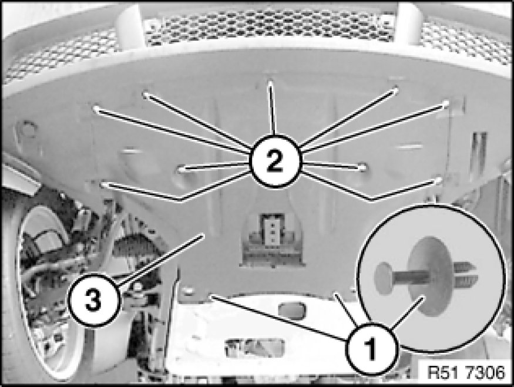

Removing and Installing/Replacing Front Underbody Protection
51 47 490 - Removing and installing / replacing front underbody protection

Note:
Illustration created using 3.0d as an example. There may be differences in detail in the case of other models.

Release expansion rivet (1).
Unfasten screws (2).
Pull out underbody protection (3) towards rear.